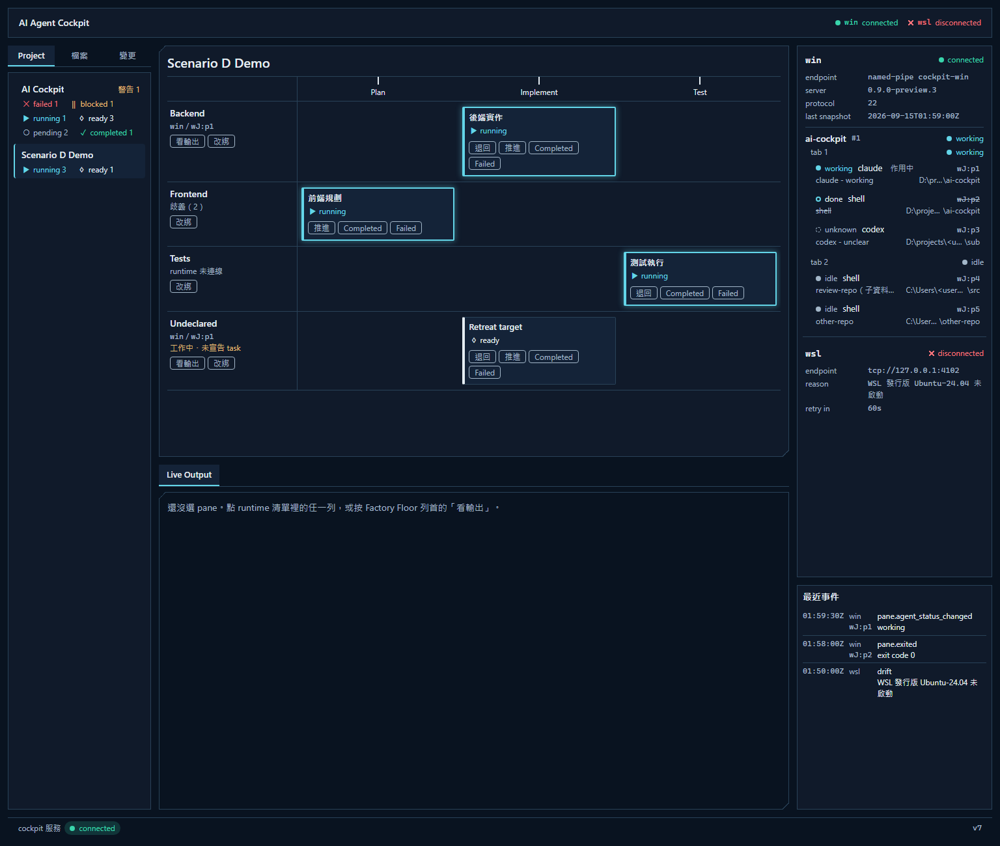
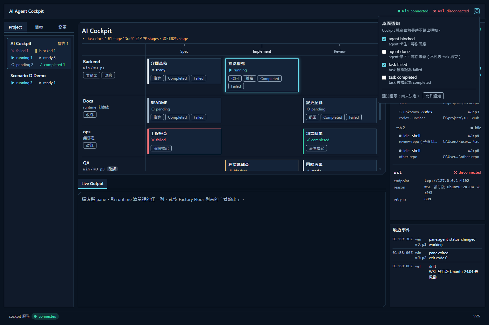

See your whole agent pipeline, signal by signal.
Cockpit turns HERDR panes into a live factory floor: which workstream each agent drives, which stage it reached, and which one is waiting on you.
One window for every agent you run
Cockpit connects to HERDR on Windows and inside WSL, merges both into one picture, and never sends a keystroke to your agents.
A factory floor, not a wall of terminals
Each project is a pipeline of stages, and its workstreams run side by side. A task card shows where the work is and whether it is running, blocked or failed. Advance it, send it back or mark it with one click.

A desktop alert when an agent needs you
Get a notification when an agent is blocked or a task fails, and switch on alerts for the rest. Alerts appear while the Cockpit window is open or minimized and not in front. Click one and Cockpit opens that pane.

Live output, in color
Read any pane's recent output with its colors intact. It is a view, not a terminal, so nothing you do there reaches the agent.
Files, diffs and git history
Browse the repo a pane is working in: Markdown, PDF, HTML, side-by-side diffs and a commit graph, all read-only.
Agents report their own progress
An agent announces its task and moves it forward with one HTTP call from its own pane. Cockpit never guesses. For now this works from Windows-side panes only.
Opens like a desktop app
A desktop shortcut starts Cockpit in the background and opens it in its own window. Close the window and Cockpit shuts down.
It watches. You decide.
Cockpit is an observer. It cannot type into a pane, prompt an agent or stop HERDR.
Your agents run in HERDR
Claude, Codex or a plain shell, in Windows or WSL panes, exactly as you run them today.
Cockpit listens
It subscribes to HERDR events and reads pane output. These three calls are the only ones it can make, and the compiler enforces that list.
You act on what it shows
Progress changes only when you click or when an agent reports it. The dashboard listens on loopback only, and Cockpit itself sends nothing off your machine.
// herdr-client: every request Cockpit can send
session.snapshot
pane.read
events.subscribeGet started
Cockpit is built from source with Rust. Windows is the tested platform, and HERDR inside WSL is supported.
Build and run
git clone https://github.com/Benjamin-Teng/ai-cockpit.git cd ai-cockpit cargo run -p cockpitOpen
http://127.0.0.1:7770/. Without a config file, Cockpit finds your local HERDR on its own.Describe your projects
Copy-Item cockpit.example.toml cockpit.toml cargo run -p cockpitBefore running, edit
cockpit.toml: replace the<user>placeholders, then list your HERDR runtimes, each project's stages and the pane every workstream runs in. Cockpit readscockpit.tomlfrom the working directory.Add a desktop shortcut
pwsh scripts/install-desktop.ps1Optional. Builds a release, installs it under
%LOCALAPPDATA%\ai-cockpit\binand puts an AI Agent Cockpit shortcut on your desktop.
No HERDR yet? cargo run -p cockpit --example ui_preview opens the dashboard with sample data. The dashboard's labels are mostly in Traditional Chinese.